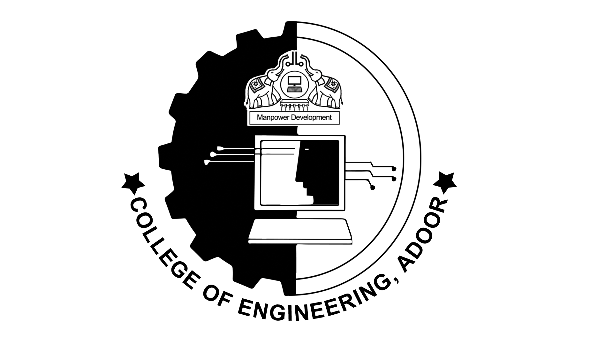

TEAM ASTRA
Team Astra is a vibrant group of students of College Of Engineering Adoor. We all share a Passion towards motorsports. The dream of having a ride of our own is our major driving force. By encouraging hands-on engineering and project-based learning, Astra brings engineering to the track. We are a team of 25 students. We are sub divided into various technical and non-technical departments. They include chassis, suspension and steering, brake and wheel assembly, powertrain, manufacturing, promotion and sponsorship. We build a new off-road vehicle every year that can survive and overcome a multitude of different terrains and obstacles. During the competition we are judged on the design and performance of our vehicle through numerous events ranging from static events like cost and design, to the dynamic events like acceleration, hill climb and maneuverability. The competition culminates in a 4 hour endurance race testing the vehicles ability to sustain repeated and intense transient loadings.
Meet The Team!ABOUT CEA
The Government College of Engineering, Adoor (CEA) is a college in Adoor, Pathanamthitta District, Kerala, India, located 3 km from the town centre at Manakkala. It is affiliated to the APJ Abdul Kalam Technological University and is run under the aegis of the Institute of Human Resources Development, an institute of the government of Kerala. The college was inaugurated in 1995 by the Chief Minister of Kerala A K Antony. College of Engineering Adoor is recognized by the All India Council for Technical Education (AICTE). It is one of the most major engineering colleges in Pathanamthitta District and is one of the eight engineering colleges in the District.